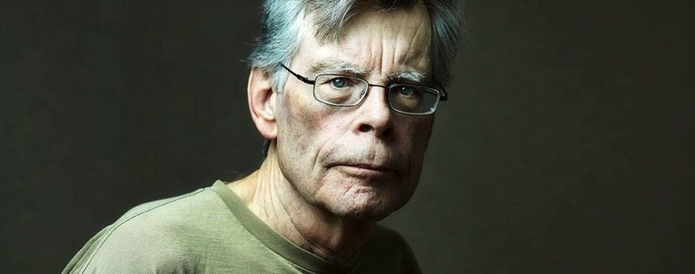
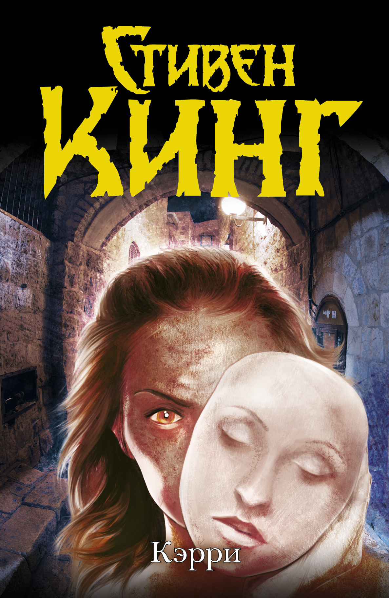

Стивен Эдвин Кинг (родился 21 сентября 1947 года) — американский писатель, работающий в разнообразных жанрах, включая ужасы, триллер, фантастика, фэнтези, мистика, драма. Продано более 350 миллионов экземпляров его книг, по которым был снят ряд художественных фильмов, телевизионных постановок, а также нарисованы комиксы. Издано 55 романов Стивена Кинга, в том числе 7 под псевдонимом Ричард Бахман и 5 научно-популярных книг. Он написал около двух сотен рассказов, большинство из которых были собраны в десять авторских сборников. В списке представлены все произведения автора, в том числе неопубликованные.
Когда спустя более полувека после публикации первого рассказа Кинга спросили, почему он пишет, писатель ответил:
"Ответ на этот вопрос достаточно прост, нет ничего другого, что я хотел бы делать. Я стал писать рассказы, потому что люблю писать рассказы. Вот почему я это делаю. Я действительно не могу себе представить, что буду заниматься чем-то другим, и я не могу представить себе, что не буду заниматься тем, чем занимаюсь."
А вот так выглядит его автограф
Стивен Эдвин Кинг появился на свет 21 сентября 1947 года в Maine General Hospital, города Портленда, штат Мэн. Стивен был вторым сыном Дональда и Нелли Руфь Пиллсбери Кинг.
Когда Стивену было 2 года, его отец вышел как-то ночью за сигаретами и не вернулся, бросив мать Стивена. Таким образом Стивен и его старший брат Дэвид были воспитаны их матерью. Часть его детства прошла в Форт Уэйн, штат Индиана, где жила в то время семья его отца, и в Стратфорде, штат Коннектикут. Стивен и его брат часто бывали у своих родственников со стороны матери в Молдене, штат Массачусетс, и в Паунале, штат Мэн.
Стивену было семь лет, когда он начал писать. Это началось после того, как он обнаружил ящик, полный фантастики и книг ужасов, в доме его тетки. В январе 1959-го он со своим братом Дэвидом решают издать свою местную газету, названную Dave's Rag. Дэвид купил мимеограф и они сделали листок, который продавался по 5 центов за выпуск.
Когда Стивену было одиннадцать, мать забрала его обратно в Дархэм, штат Мэн. Ее родители Гай и Нелли Пиллсбери были слишком старыми и сестры Руфи Кинг убедили ее позаботиться о престарелой паре. Другие члены семьи предоставили ей маленький домик в Дархэме и обеспечили финансовую поддержку. После того, как бабушка и дедушка Стивена скончались, миссис Кинг начала работать кухаркой в Пайнленде.
Первый по-настоящему опубликованный рассказ "Я был подростком, грабившим могилы", Стивен Кинг написал в 1965-м. Рассказ был опубликован в Comics Review и содержал около 6.000 слов.
В 1966-м Стивен Кинг закончил среднюю школу Лисбон Фоллс и поступил в Университет Мэна. Оглядываясь назад на свое школьное время, Кинг говорил: "моя карьера в средней школе была ординарной, я не был ни среди лучших, ни среди худших".
Позже, этим же летом, Кинг начал работать над романом названным им Getting It On, о нескольких детях, которые засели в классе и пытаются безуспешно отразить атаку национальной гвардии. В течении первого курса Кинг завершил свой первый полновесный роман "Длинный путь". Он отправил роман в издательство Bennet Cerf/Random House, но получил отказ. Кинг плохо воспринял отказ издательства и надолго оставил роман.
На этом-же курсе Стивен получил небольшой гонорар (тридцать пят долларов) за рассказ "Стеклянный пол", опубликованный в Startling Mystery Stories.
На втором курсе в Университете Мэна в Ороно, он был автором еженедельной колонки для студенческой газеты "Кампус Мэна". Он также активно участвовал в студенческой жизни, был членом Студенческого Сената. Стивен поддерживал антивоенное движение в кампусе Ороно, считал, что война во Вьетнаме была антиконституционной. Он закончил Университет Мэна в июне 1970-го со степенью бакалавр наук в английском и возможностью преподавать в средней школе. После окончания университета мед. комиссия признала его негодным к военной службе на основании высокого кровяного давления, ограниченного зрения и плоскостопия.
Следующая идея Кинга возникла благодаря поэме Роберта Браунинга "Малыш Роланд к Темной Башне пришел". Он обнаружил ярко-зеленую цветную бумагу в библиотеке и начал работать над сагой "Темная Башня". Но из-за недостатка денег для написания столь объемного романа, он забросил его. В то время Кинг подрабатывал на бензаколонке за 1.25 доллара в час.
Затем Стивен Кинг начал зарабатывать деньги на продаже своих рассказов в мужские журналы типа Cavalier. Многие из этих рассказов были позже собраны в сборник "Ночная Смена", или же появились в других антологиях.
Стивен Кинг и Табита Джейн Спрюс поженились 2-го января 1971. Стивен встретил Табиту в архивах библиотеки Фоглера (Fogler Library) Университета Мэна, где они оба работали как студенты. Поскольку Стивен не смог найти место преподавателя сразу после окончания обучения, Кинги жили на его заработок от работы прачечной и на студенческую ссуду, сбережения Табиты, а также на случайные гонорары от рассказов, проданных Стивеном в журналы для мужчин.
Осенью 1971-го Стивен начал преподавать английский в старших классах Академии Хэмпдена, общеобразовательной высшей школе в Хэмпдене, штат Мэн. Оклад Стивена составлял тогда 6.400 долларов в год. Работая по вечерам и выходным, он продолжал писать рассказы и романы.
В это время Стивен начал работать над рассказом о девушке Кэрриетте Уайт. После того, как он написал несколько страниц, Кинг решает, что рассказ выходит плохим и выбрасывает их в мусорную корзину. К счастью для Кинга, его жена подобрала эти страницы и, прочитав их, убедила мужа продолжить историю. Он согласился, и в январе 1973-го отправил "Кэрри" в издательство Даблдэй и К. В марте Даблдей покупает книгу, а 12-го мая Даблдей продают права на издание "Кэрри" Новой Американской Библиотеке за 400.000 долларов. По контракту Стивен Кинг получит половину этой суммы, что позволяет Кингу оставить преподавание и писать столько, сколько необходимо.
Живя в округе Бонгор с самого брака, Кинги перевезли возросшую семью в южный Мэн из-за того, что у матери Стивена ухудшилось здоровье в конце лета 1973-го. Снимая летний домик на озере Себаго в Норт Виндхэме в течении зимы, Стивен написал свой следующий опубликованный роман, в оригинале названный "Второе Пришествие". В это время мать Стивена умерла от рака в возрасте 59 лет.
"Кэрри" была опубликована весной 1974-го. Осенью того же года Кинги уехали из Мэна в Боулдер, штат Колорадо. Они жили там меньше года, в течение которого Стивен написал роман "Сияние", действие которого происходило в Колорадо. Вернувшись в Мэн летом 1975-го, Кинги приобрели дом в Лэйкиз Реджион в западном Мэне. В этом доме Стивен закончил писать "Противостояние", многое в котором происходило в Боулдере. "Мертвая зона" была также написана в Бридгтоне.
В 1977-м Кинги провели три месяца запланированного отпуска в Англии и вернулись домой в середине декабря, приобретя новый дом в Сентер Лоувелл , штат Мэн. После того как они прожили там лето, Кинги переехали на север в Оррингтон, вблизи Бангора, так что Стивен мог преподавать на литературных курсах в Университете Мэна. Кинги вернулись в Сентер Лоувелл весной 1979-го. В 1980-м Кинги приобрели второй зимний дом в Бангоре, сохранив дом в Сентер Лоувелл как летний.
У четы Кингов трое детей: Наоми Рэйчел, Джо Хилл и Оуэн Филлип. Весной 1999-го у них появился первый внук Этан (Ethan) - сын Джо Хилла и его жены Леаноры.
Стивен шотландско-ирландского происхождения, ростом 6 футов 4 дюйма (примерно 1 метр и 93 сантиметра) и весит приблизительно 200 фунтов (около 91 килограмма). Он голубоглазый, носит очки с детства, светлокожий, волосы черные. Иногда отращивает бороду между финалом Мировой Серии и открытием бейсбольных игр во Флориде. В бороде - седина. Временами Стивен носит усы.
Стивен использовал свой опыт, полученный в драматическом кружке колледжа, когда играл небольшую роль в картинах Джорджа Ромеро Knightriders и Creepshow, сценарии которых он написл. Джо Хилл Кинг также появился в Creepshow, который был выпущен в 1982-м. Также Стивен Кинг написал и поставил фильм "Максимальное ускорение" в 1985-м. Фильм Creepshow II был выпущен в 1987-м.
Многие из работ Стивена Кинга были экранизированы, включая: "Кэрри", "Мертвая зона", "Сияние", "Кристина", "Жребий", "Воспламеняющая взглядом", "Куджо", "Кладбище домашних животных" (для этого фильма Кинг написал сценарий и в котором играл небольшую роль священника) и "Мизери", а также некоторые другие. Популярный фильм "Оставайся возле меня" был снят по мотивам его повести "Труп" из сборника "Четыре сезона". В 1992-м "Спящие пешеходы" был снят на основе оригинального сценария Кинга.
Стивен регулярно вносит пожертвования в Американский Центр Рака, обеспечивает обучение студентов местной средней школы через Академию Хэмпдена, а также вносит свой вклад во многую другую благотворительную деятельность местного и национального масштаба.
В июне 1999-го Стивен Кин попал в автомобильную катастрофу - писатель прогуливался по обочине дороги в местечке Норт-Лоувелл, штат Мэн, неподалеку от своего загароднего дома. Водитель следовавшего в том же направлении микроавтобуса Dodge Caravan на мгновенье отвлекся на лай своей собаки, сидевшей в салоне без привязи. Этого оказалось достаточно, чтобы машина выскочила на обочину... От удара Стивен Кинг отлетел на 5 метров и очнулся уже в больнице с множественными переломами ноги, бедра и поврежденным легким. Через 3 недели после операции его отпустили из Центрального медицинского центра Мэна в Бангоре. Стивен долгое время был прикован к постели и проходил курс реабилитации.
Сейчас живет в Бангоре, штат Мэн.
Всего романов насчитывается 59, повестей - 35, рассказов - 140, сборников - 10, комиксов - 3, стихов - 15, пьес - 2 и сценариев - 2.

Первый роман написан в 1974 году, называется "Кэрри" и написан в жанре мистического ужаса. Сюжет романа повествует о затравленной школьнице по имени Кэрри Уайт, открывшей с первой менструацией в себе способности к телекинезу. Основываясь на сказке о Золушке, повествование затрагивает тематику религиозного фанатизма и подростковой жестокости. Писатель упоминал, что, написав несколько страниц романа, он посчитал его неудачным и выбросил черновик в мусорную корзину, где его обнаружила жена Кинга — Табита и уговорила мужа дописать книгу. Псевдодокументальные выдержки были добавлены в произведение, чтобы увеличить его объём и придать происходящему реализма. Критики встретили роман неоднозначно, считая персонажей неубедительными, а саму книгу — «мусором». Литературное признание к роману пришло позже.
Пока что последнее его произведение, под названием "На подъёме", написанно в 2018 году. Сюжет повествует о необычном событии, которое происходит со Скоттом Кэри проживающем в городе Касл-Рок США . Его организм мистическим образом начинает сбрасывать вес при этом оставаясь здоровым. Он начинает боятся что потеря массы может отразится на его жизни превратив его в "фрика". Позже Скотт узнает что в его городе пара лесбиянок хочет открыть ресторан и подвергается нападкам, он решает им помочь…
"На подъёме" — нетипичное произведение Стивена Кинга, тут перемешаны разные жанры, такие как — детектив, мистика и комедия.